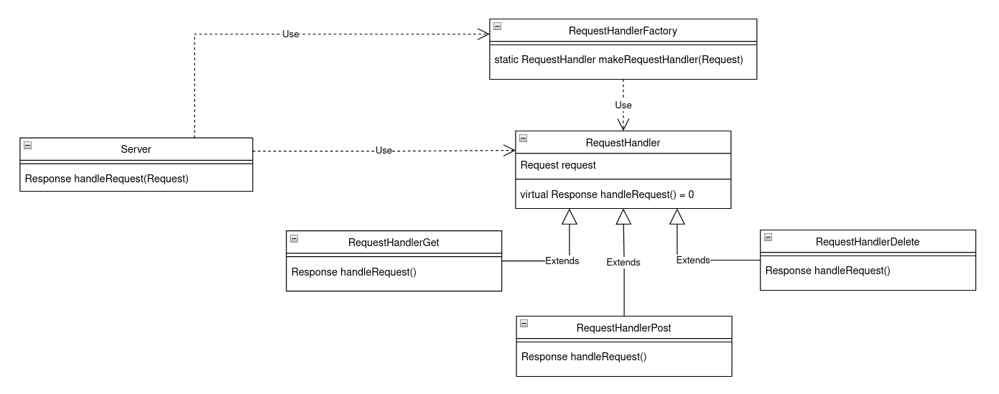
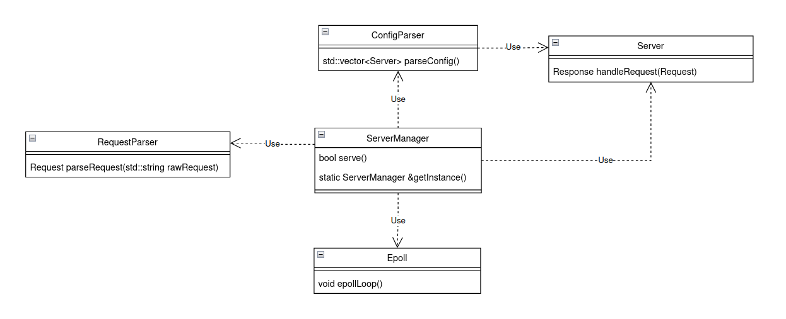
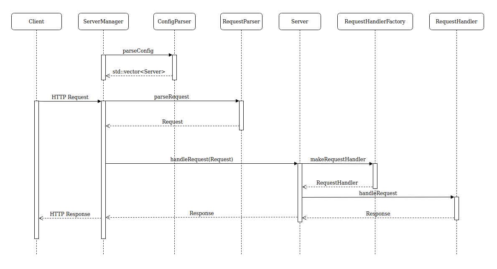
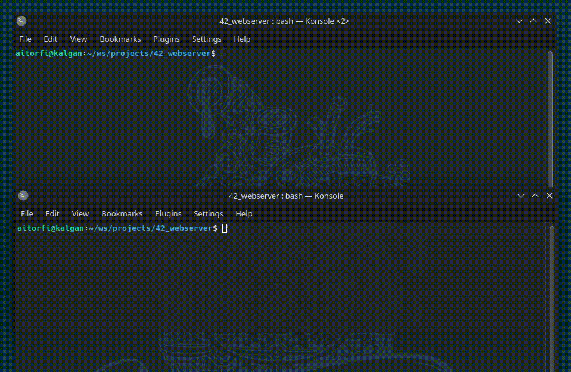

Introduction
I developed this project as part of the 42 Network curriculum. It consists in a simple web server that handles GET, POST and DELETE HTTP requests in a similar way to Nginx. The server can serve a full static website and execute CGI scripts in any programming language. A configuration file must be provided when running the program where several aspects of the server can be tweaked, some examples are server root directory, index file, error pages, allowed methods, autoindex and file upload location.
This project was developed in C++ using a strong object oriented programming approach. I implemented a couple of very popular design patters like Factory classes and Singleton Factory pattern.
Architecture
Here is a class diagram that describes how I used inheritance and the Factory pattern to create a layer separation between the Server class and the handling of requests that is performed by the RequestHandlerGet, RequestHandlerPost and RequestHandlerDelete classes. By implementing this design pattern the Server class has no knowledge of how a request is handled, it doesn't event need to know the HTTP method of the request because the RequestHandlerFactory class handles the logic of returning the appropriate RequestHandler implementation after inspecting the request:

Taking a look at the following class diagram it's clear that the ServerManager class is the centerpiece of the program. This class orchestrates the flow of every request from the epoll loop, handled by the Epoll class, to sending clients the responses obtained from the Server class. This class needed to be instantiated from the main method and accessed later by clean up functions that is why I decided it would be nice to implement a Singleton pattern that provided a unique access point and ensured there would always be a single instance of the ServerManager class.

I would also like to mention that the Epoll class from the previous diagram is a wrapper for the <sys/epoll.h> library. The purpose of this class is to enhance the overall readability of the program by creating a custom interface to access that of the epoll library.
Finally, here is a sequence diagram that describes the flow of the program:

Demo
In the following gif you can see a small demo of the web server. I run the program and it displays how many servers are listening and their ports, then I send an HTTP request and we can see how the server sends a payload with a 200 OK status code in the response.
